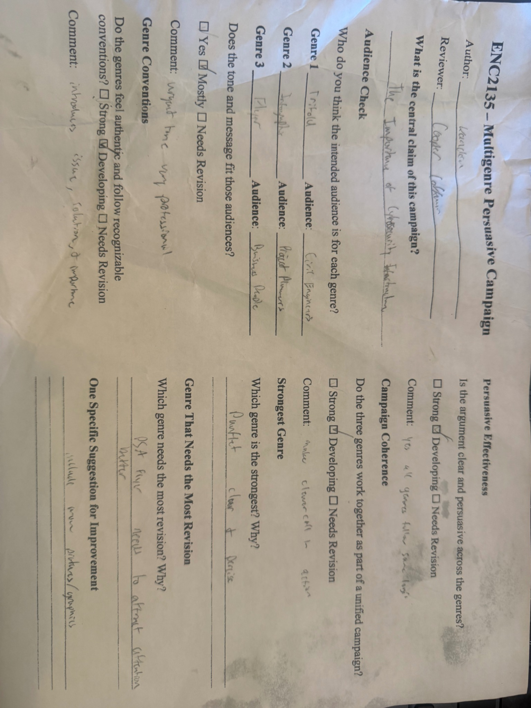

Artifacts
Evidence from earlier stages of the writing process
These artifacts help show development that would be harder to see if only the final pieces were included. One shows how my work was read by a peer while it was still developing. The other shows how broad my thinking was earlier in the semester before my writing became more focused.

Artifact 1: Peer feedback on the campaign draft
This artifact matters because it shows that my campaign was not finished just because I had completed the draft. The peer feedback points to places where the project still needed work, especially in how engaging the flyer was and how clearly the genres connected to the argument. Seeing those responses made me step back and think about how the project looked to someone other than me.
What I like about including this artifact is that it shows revision as an actual part of writing instead of something I mention only after the fact. It reminds me that a piece can feel clear in my own head and still need stronger direction for a real reader.
Artifact 2: Early outline from Project 1
This outline represents the kind of thinking I was doing earlier in the semester. It is organized, but the topic is still wide and the argument is still pretty general. I was listing important points, but I had not yet learned how to push those points into a stronger claim with a clearer direction.
Compared to the campaign project and the global revision, this artifact helps make the change in my writing easier to see. My later work is more selective, more aware of audience, and more concerned with how the argument lands instead of only what information is included.
Published Project 1 Outline
This is the same early planning artifact shown as a downloadable document, but I also included the text directly on the site so the development is visible without opening another file.
Project 1 – Initial Outline
Topic: The impact of Artificial Intelligence on the economy
I. Introduction
- AI is growing quickly
- It is affecting jobs and industries
- Thesis: AI is changing the economy in both positive and negative ways
II. Job Displacement
- Machines replacing workers
- Example: automation in factories
- Some workers losing jobs
III. Economic Growth
- AI improves efficiency
- Businesses save money
- New industries created
IV. Skills Gap
- Workers need new skills
- Education and training required
V. Conclusion
- AI has both benefits and drawbacks
- Society must adapt
Reflection Note Added Later
This outline shows that my ideas were broad and not very focused. I had not yet narrowed my topic or developed a strong argument. Later in the semester, I improved by making my writing more specific and analytical.